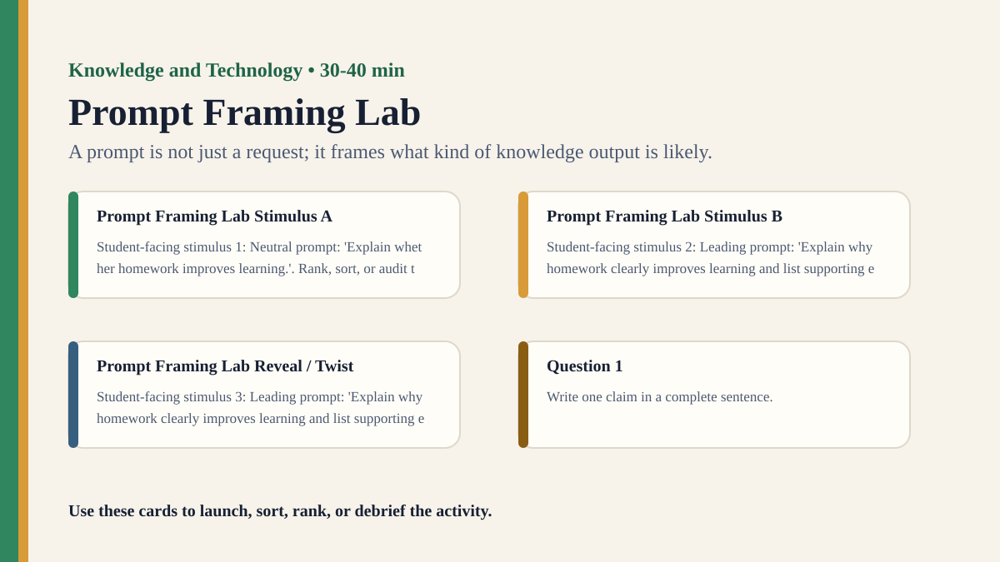

Detailed activity
Prompt Framing Lab
Students compare how different prompts can make the same AI-style task produce different answers and assumptions.
Free classroom activity
Big Idea
A prompt is not just a request; it frames what kind of knowledge output is likely.
Teacher Summary
Students investigate how prompt wording shapes AI-style answers, uncertainty, and evidence use.
Use prompt comparisons to examine human responsibility in machine-assisted knowing.
Materials
- Prompt cards with neutral, leading, vague, evidence-demanding, and role-based versions.
- AI-output comparison sheet or teacher-written mock outputs.
Ready to run
Classroom Resource Pack
Use the printable pack for concrete stimulus cards, a student recording sheet, teacher prompts, and a visual prompt image.
Visual Prompt

Student Prompt
Inspect the Prompt Framing Lab stimulus. Record one first claim, the evidence you used, your confidence, and what would make you revise.
Actual Lesson Questions
| # | Question for students | Teacher cue |
|---|---|---|
| 1 | Write one claim in a complete sentence. | Teacher cue: look for a clear claim, not just a description. |
| 2 | List two pieces of evidence. | Teacher cue: students should name visible words, data, source features, method features, or contextual clues. |
| 3 | Separate observation from interpretation. | Teacher cue: this is where assumptions, framing, models, or perspective usually appear. |
| 4 | Circle one confidence level and justify it. | Teacher cue: confidence is data for the debrief, not a grade. |
| 5 | Name one piece of missing information. | Teacher cue: push for method, source, context, comparison, or definitions. |
| 6 | Answer using the activity as evidence. | Teacher cue: students should move from the classroom example to a general TOK issue. |
Concrete Stimulus Packet
Stimulus
Platform Ranking Snapshot
Three posts appear in this order: 1) sponsored revision app, 2) viral rumour about exam patterns, 3) teacher guide to retrieval practice. Engagement scores are 91, 88, and 34; reliability ratings are low, very low, and high.
Use this to ask how ranking rules shape what feels important or credible.Stimulus
Prompt Framing Lab Example
Neutral prompt: 'Explain whether homework improves learning.'
Use this as the activity-specific version of the stimulus.Stimulus
Comparison / Twist Card
Leading prompt: 'Explain why homework clearly improves learning and list supporting evidence.'
Reveal after students commit to their first judgement.Teacher Key / Reveal
The key move is not the “right answer”; it is the moment students see how a prompt is not just a request; it frames what kind of knowledge output is likely.
Setup Notes
- Use teacher-written mock outputs if live AI access is not appropriate.
- Keep the task constant while changing only the prompt wording.
Ready-to-Use Examples
- Neutral prompt: 'Explain whether homework improves learning.'
- Leading prompt: 'Explain why homework clearly improves learning and list supporting evidence.'
Run Resources
- Prompt comparison grid: assumption, evidence requested, uncertainty shown, missing perspective.
- Prompt revision checklist: define task, request sources, ask for uncertainty, include counterarguments.
Procedure
- Give groups the same knowledge task with different prompt wordings.
- Students predict how their prompt might shape the answer.
- Groups compare generated or mock outputs for tone, evidence, uncertainty, and omissions.
- Students revise one prompt to improve reliability and transparency.
- Debrief how human framing and automated generation interact.
Teacher Language
- The output begins before the machine answers; it begins with the frame we give it.
- What did your prompt make easy for the system to say?
TOK Debrief Questions
- Knowledge question: Who is responsible for knowledge produced through a prompt?
- Can a better question make a machine answer more reliable?
- When does a prompt smuggle in an assumption?
Knowledge Questions
- Who is responsible for knowledge produced through a prompt?
- How does question design shape technological knowledge?
- Can prompts improve justification or merely improve fluency?
Sample Student Output
- The leading prompt produced a more confident answer even though the evidence was not stronger.
- Our revised prompt asked for uncertainty, so the answer became less fluent but more responsible.
Exhibition Object Idea
Two prompts for the same task with visibly different outputs.
Adaptations
- Support: compare two prompts only.
- Challenge: add a source-checking phase where students verify one output claim.
Extension Tasks
- Students write a prompt policy for using AI in TOK research.
- Compare prompt framing with survey wording and loaded headlines.
Teacher Notes
This can be run with live AI tools or with teacher-prepared mock outputs.
Focus on prompt assumptions, evidence requests, and uncertainty rather than prompt engineering tricks.